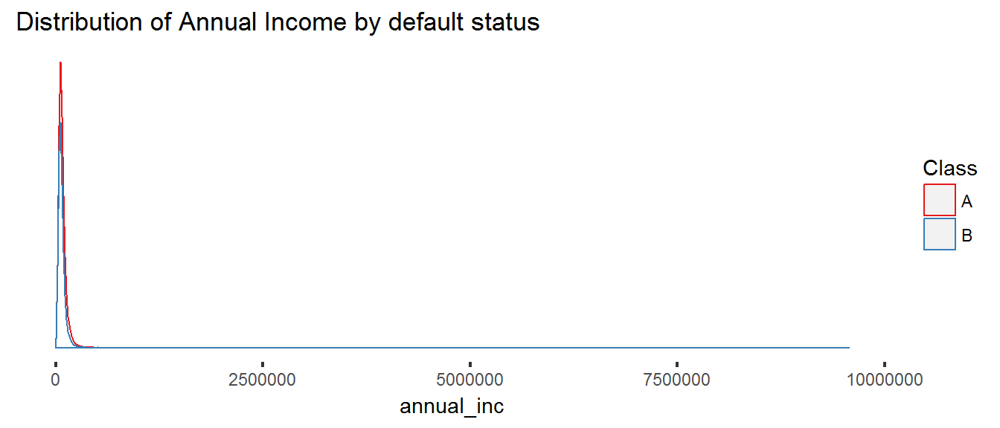

Exploratory Analysis Part I: Numerical Variables
Ryan Kuhn
Start with a Basic Assumption
To start off, this analysis makes an assumption about how to classify loans. I’ve made the assumption that current and loans in the grace period are current (A) and all other loans have defaulted (B). This is an assumption because some of those late loans will be made current but it’s not a likely action.
Analyzing the distribution by grade
Quantity by status and grade
| A | B | C | D | E | F | G | |
|---|---|---|---|---|---|---|---|
| A | 199,443 | 332,471 | 304,443 | 152,287 | 71,227 | 22,351 | 5,057 |
| B | 6,700 | 24,255 | 38,472 | 30,603 | 19,991 | 8,489 | 2,512 |
Proportion by status and grade
| A | B | C | D | E | F | G | |
|---|---|---|---|---|---|---|---|
| A | 0.97 | 0.93 | 0.89 | 0.83 | 0.78 | 0.72 | 0.67 |
| B | 0.03 | 0.07 | 0.11 | 0.17 | 0.22 | 0.28 | 0.33 |
Analyzing the Loan Amount
QUESTION: Why is there a peak at 24,000 and not at 25,000? IS there a cutoff in the scoring model or is 25K a break point for something else?
Looking at grades D through G, the distribution of the defaulted and is fairly consitent with the distribution of current loans. On it’s own, this suggests that loan amount won’t have a predictive value over default rates. The exception is there seems to be a slight bump at the $35,000 level which is the maximum Lending Club offers. Loans at the maximum amount default at a disproportionately low rate. There may be an advantage in investing in loans in these grades at the max loan amount.
There isn’t the same hump at the $35,000 level when looking at grade A & B loans. Those loans are more highly concentrated at the lower loan amount. Perhaps LC’s credit rating status punishes the borrower for a higher loan amount.
QUESTION: Why does the 35,000 loan amount have lower proportionate defaults in grades C though E? Take a look at 35K loans and the relationship with other variables

Annual Income

Clearly we get a better picture if we narrow the range of values. I’ll set a maximum income level of 250,000 so that we see less of the outlines and more of the more dense areas. There are only 12K loans with incomes greater than $250K which is approximately 1% of the total number of loans.
FALSE TRUE
1206375 11922